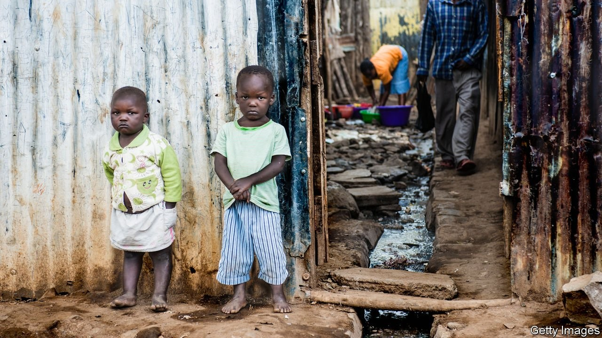

Sustainable Development Goal 4.1
United Nations Sustainable Development Goal 4.1 states that
“By 2030, ensure that all girls and boys complete free, equitable and quality primary and secondary education leading to relevant and effective learning outcomes” How can we determine whether this goal has been achieved or not? It seems that the criteria the SDG defines are quite ambiguous. What counts as quality education, and what is an effective learning outcome? The UN measures quality education by determining the percentage of students in certain age groups that have achieved a minimum proficiency level in math and reading. These “age groups” are categorized into 3 groups: grades 2/3, end of primary education, and end of lower secondary education. One of the most important basic human rights is the right to education and to learn. Although a large majority of high-income countries are able to access free education up to the secondary level, in the poorest countries, like in Sub-Saharan Africa, the lack of funding for schools as well as the majority of the population living in rural areas makes access to education extremely difficult for children. According to UNESCO, 1 in every 5 children are not enrolled in school globally, and for Sub-Saharan Africa, that number becomes 1 in 3. That’s a total of about 263 million children and youth!
Gender is also a factor in education opportunities, as for every 100 boys of primary age not in school, 123 girls are denied access to education. Education promotes gender equality and also reduces teen pregnancies in third-world countries, which is essential for improving the quality of life in the world’s poorest environments. By ensuring that every child is able to meet a minimum requirement of basic education in math and literacy, it paves the way for changes in economic opportunities, improving the quality of life for their families, as well as the country’s population. To learn more about how education relates to poverty, as well as how you can contribute, click on the links in the navigation bar on the left.
Sources https://www.worldvision.ca/stories/education/why-is-education-important http://uis.unesco.org/en/news/education-data-release-one-every-five-children-adolescents-and-youth-out-school https://sdg-tracker.org/quality-education